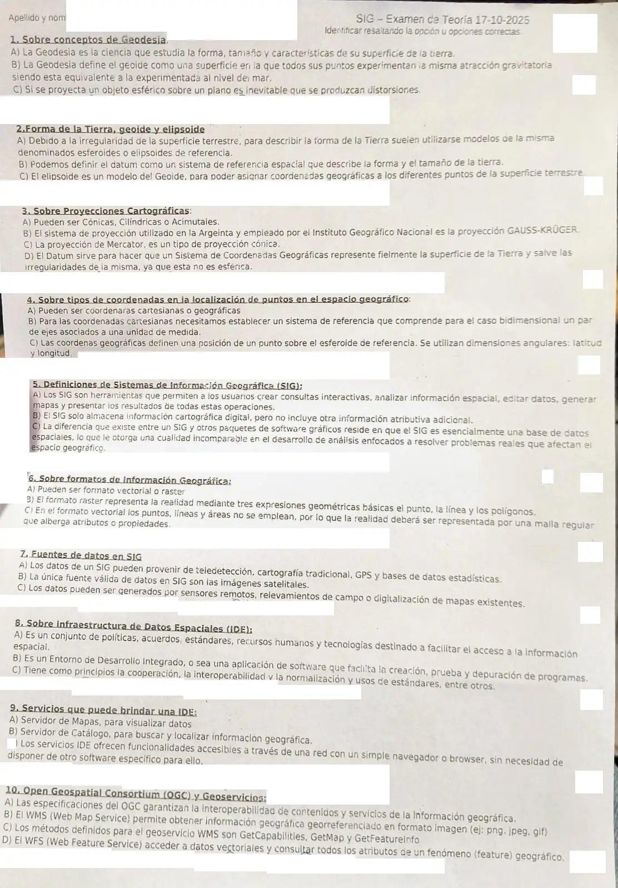

Examen de teoría, 17/10/2025
Parcial de teoría, 17/10/2025
Enunciado


Propuesta de respuesta
Respuesta no verificada. La propuso Luta Studios con inteligencia artificial y ningún docente la revisó. Puede tener errores.
La consigna pide resaltar la opción u opciones correctas. En ningún punto corresponde «Ninguna».
| Punto | Correctas | Por qué |
|---|---|---|
| 1. Geodesia | A y C. B, probable | A es la definición del apunte 2.2, pág. 4. C está textual en el apunte 2.2, pág. 2. B no figura en los apuntes |
| 2. Forma de la Tierra | A, B y C | A y B son las del apunte 2.2, págs. 4 y 19 (B omite que el datum también da un origen a las coordenadas, pero lo que dice es cierto). C, porque el elipsoide es la figura que mejor se asemeja al geoide y sobre él se definen latitud y longitud |
| 3. Proyecciones | A, B y D | C es falsa, Mercator es una proyección cilíndrica (apunte 2.2, pág. 10). B y D están textuales en el apunte 2.2, págs. 12 y 21 |
| 4. Coordenadas | A, B y C | A, porque las dos formas de determinación son cartesianas y geográficas (apunte 2.1, pág. 17). B es la definición de cartesianas del apunte 2.1, pág. 18, cortada. C, porque latitud y longitud definen la posición sobre el esferoide de referencia (apunte 2.2, pág. 5) |
| 5. Definiciones de SIG | A y C | B es falsa, el SIG almacena la cartografía digital y le anexa información atributiva organizada en tablas (apunte 3, pág. 2) |
| 6. Formatos | A | B y C tienen las definiciones cruzadas. Punto, línea y polígono son del vectorial, y la malla regular es del ráster (apunte 3, pág. 12) |
| 7. Fuentes de datos | A y C | B es falsa, el apunte 4, pág. 4, da también el GPS y la información geográfica voluntaria, y el programa suma la digitalización de mapas |
| 8. IDE | A y C | B confunde la sigla con la de un entorno de desarrollo. A es la definición de 6.2 IDE, pág. 2, y C nombra tres de sus principios (pág. 8) |
| 9. Servicios de una IDE | A, B y C | Los tres están en 6.2 OGC, págs. 4 y 5 |
| 10. OGC y geoservicios | A, B, C y D | A y D están textuales en 6.2 OGC, págs. 3 y 19. B es lo que hace WMS (pág. 10) y C, sus tres operaciones (págs. 12 a 15) |
Cómo se descartan las falsas. Las afirmaciones falsas cambian una palabra clave de la lámina. En la 3C, «cilíndrica» por «cónica». En la 5B, «se anexa» por «no incluye». En la 6, ráster por vectorial. En la 7B, «la única fuente». En la 8B, la sigla IDE con otro significado.
Respuesta no verificada. Puede tener errores.
Se armó con Parcial de teoría, secciones La forma de la Tierra, Proyecciones cartográficas, Mercator y UTM, Sistema Gauss-Krüger, Datum, Coordenadas, Qué es un SIG, Datos espaciales, Vectorial y ráster, IDE y OGC y geoservicios, con las citas de los apuntes 2.1, 2.2, 3, 4, 6.2 IDE y 6.2 OGC.
Quedó en duda: La 1B no está en ningún apunte del Drive. Es coherente con la definición del apunte, que hace coincidir el geoide con los mares en calma, pero no habla de gravedad, así que no se puede confirmar. En la 7, «bases de datos estadísticas» y «relevamientos de campo» no aparecen con esas palabras en los apuntes; se marcaron porque el apunte y el programa nombran fuentes parecidas, como la captura de atributos y el GPS. La 2C y la 4B no son textuales. La 2C resume lo que dice el apunte del elipsoide y la 4B corta la definición antes de «perpendiculares entre sí y con un origen», pero lo que dicen es cierto. En la hoja la fila de la opción «Ninguna» y la letra de la 9C están tapadas; se leyó como C por el orden. No hay resolución oficial para comparar.
¿Cómo te fue?
Marcá cada tema del examen.
- GeodesiaCómo viene el examen, en Parcial de teoría
- Geoide y elipsoideCómo viene el examen, en Parcial de teoría
- ProyeccionesProyecciones cartográficas, en Parcial de teoría
- CoordenadasCoordenadas, en Parcial de teoría
- Definición de SIGQué es un SIG, en Parcial de teoría
- FormatosFormato del documento, en Integrador
- Fuentes de datosDatos espaciales y cómo se obtienen, en Parcial de teoría
- IDEServicios de una IDE, en Parcial de teoría
- OGC y geoserviciosOGC y geoservicios, en Parcial de teoría